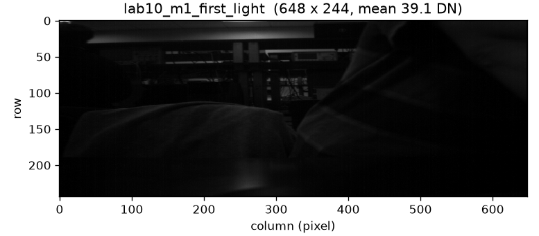
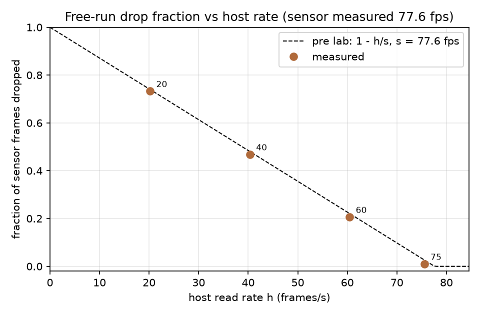

Name: Tong Li NetID: tongli5 Date of data: 2026-11-17
1(a). Include your first-light image and your test-pattern result, and report how many pixels of the test pattern mismatched. Explain what your packer does at the start of a row and why; if your first version did not reset there, describe what the image looked like and how you recognised the fault.

Figure 1. First light: snapshot BRAM, 648 × 244 (every second row), mean 52.0 DN.
| Test pattern | Frames | Pixels checked | Mismatched |
|---|---|---|---|
| M1, snapshot path | 5 × (648 × 244) | 790,560 | 0 |
| M2, DDR3 ring | 100 × (648 × 488) | 31,622,400 | 0 |
Geometry 648 × 244; OR mask 0x3FF, AND mask 0x000.
Row start: the position counter is held at 0 for as long as line_valid is low, so every row starts in lane 0. It is not
cleared on the rising edge of LVAL: on the test pattern LVAL and DVAL rise together, so that clear would land on the first pixel and swallow it.
The 0 mismatches show my packer never swallowed a pixel. A packer that reset on the rising edge would lose the first pixel of every row and shear the image by one more pixel per row; the test pattern would show it as mismatches from row 1 on.
1(b). Suppose the sensor were 650 pixels wide. Describe precisely what your packer would do at the end of each row, what the image would look like, and the smallest change that would fix it.
line_valid falls with the counter ≠ 0, push the partial entry with the empty lanes zero-padded (163 entries per row), and have the host drop the 2 pad pixels per row.1(c). What would sampling on the rising edge give you, and could you tell from the image alone? Say what measurement would settle it.
The sensor changes D[9:0] on the rising edge of CLK_OUT. Sampling there lands on the transition: bits from the old and the new pixel get mixed, and setup/hold is violated. The result is either the neighbouring pixel or random bit errors. The image alone cannot tell you: a one-pixel shift is invisible, and sparse bit errors look like noise. The settling measurement is the test-pattern mismatch count, because every pixel has a known value.
2(a). Report the total block RAM on the device and a full frame as 10-bit and as 16-bit, each as a percentage. Then report what your built design actually uses, from the utilization report, and say what is using it.
| Quantity | Size | % of device |
|---|---|---|
| Device block RAM, 105 × 36 Kb | 472.5 KiB | 100 % |
| Full frame, 10-bit | 386.0 KiB | 81.7 % |
| Full frame, 16-bit | 617.6 KiB | 130.7 % |
Built design (post_route_utilization.rpt) | 87.5 tiles = 393.75 KiB | 83.3 % |
Users: snapshot BRAM 62 tiles, pipe FIFO 16, pixel FIFO 5.5, FrontPanel 2, write DMA 2. The DDR3 controller (MIG) uses none.
2(b). The snapshot path stores 244 rows rather than 300, even though 300 would fit. Using your own numbers, give the real reason, and say what else on the chip would have had to be sacrificed for the extra rows.
244 = 488 / 2: reading every second row gives the whole field of view at half vertical resolution. 300 rows would only add a band of the scene, not complete it. With 244 rows the design is already at 87.5 of 105 tiles (83.3 %). Scaling the 62 snapshot tiles to 300 rows gives 62 × 300 / 244 ≈ 76, i.e. 14 more tiles and about 101.5 of 105 (97 %). That leaves no room, so the 16-tile pipe FIFO, which keeps the USB link streaming, or the pixel FIFO would have had to shrink.
3(a). State what a frozen interface actually bought here — and what it cost.
3(b). Compute the pixel rate that supports and compare it with what the sensor produces. Then: suppose you had made the entry one pixel wide. Describe what would have had to change downstream.
4 px per entry ÷ 2 ui_clk per entry × 100 MHz = 200 Mpixel/s, against 25 Mpixel/s from the sensor (8× headroom).
A one-pixel entry would have needed: a 13-bit pixel FIFO, a new write-DMA packer (the 176-bit accumulator and 128-bit beat assembly), new end-of-frame and padding logic, and a new host unpack format. All of it would need re-verifying. It would also cap the backbone at 50 Mpixel/s, too slow for the faster LVDS front end it was built for.
4(a). Report the delivered frame rate in mode A and in free-run, with the sensor period for each. Explain the difference using the two timing regimes you measured in Lab 9.
| Mode | Delivered | Sensor period | Dropped |
|---|---|---|---|
| Mode A | 39.2 fps | 25.60 ms | 0 |
| Free-run | 77.6 fps | 12.88 ms | 0 |
Mode A is the single-frame regime. Each FRAME_REQ waits until the previous frame is stored, so every frame pays FRAME_REQ → first LVAL (6.54 ms) plus readout (12.69 ms), which is 19.23 ms from Lab 9, plus the 6.4 ms between the end of one frame and the next request. The ratio to free-run is 25.60 / 12.88 = 1.99. Free-run is the pipelined regime: the next exposure overlaps the current readout, so the period is readout + FOT = 12.88 ms, the same value Lab 9 measured. In both modes delivered = sensor rate.
4(b). Include your plot of measured drop fraction against host rate, with your pre lab prediction drawn over it. Report the deviation at each point, and account for it.

Figure 2. Free-run drop fraction (sequence gaps / sensor frames) against host read rate; dashed line is the pre lab 1 − h/s, s = 77.6 fps.
| Host target | Delivered h | Drop fraction, measured | Pre lab 1 − h/s | Deviation |
|---|---|---|---|---|
| 20 fps | 20.2 fps | 0.733 | 0.742 | −0.010 |
| 40 fps | 40.3 fps | 0.468 | 0.485 | −0.017 |
| 60 fps | 60.5 fps | 0.206 | 0.227 | −0.021 |
| 75 fps | 75.5 fps | 0.010 | 0.034 | −0.024 |
The measurement is always slightly below the prediction, for two reasons. The host ran slightly faster than its target. More importantly, the sensor keeps producing at s while the ring is full and those frames are dropped, but each run starts with the ring nearly empty. The first frames therefore fill free slots instead of being lost, for 3 / (s − h) seconds. That buffered start is a larger share of the run as h approaches s: 0.05 s of a 5 s run at 20 fps, but 1.4 s, longer than the whole 1.3 s run, at 75 fps. So the deviation grows with h.
4(c). Show that the frames you received were whole and correct while frames were being dropped. What in the design guarantees that? Then name the single thing that limits your best delivered rate, and give the one measurement that proves it.
Integrity: test pattern, free-run, host at 20 fps. 50 frames were received and 133 frames were lost as sequence gaps (e.g. 152, 156, 160 …), with 0 mismatched pixels.
Guarantee: each slot goes FREE → WRITING → READY → READING → FREE. The writer only takes a FREE slot and the reader only a READY one, so the two never share a slot. A frame that finds no free slot is discarded whole by the write DMA, counted, and still consumes a sequence number. A loss is therefore a gap, never a torn frame.
Limit: the sensor. Proof: with the host reading as fast as it can, it spent 72 % of the time waiting for a frame (9.25 ms of each 12.88 ms period), and the ring never held more than 1 frame. Every stage downstream was idle waiting for the sensor; reading one frame over USB took only 2.06 ms, about 486 fps of link capacity.
5(a). Using your free-run rate, how long a host stall can the ring absorb before the first frame is lost? Name one application where dropping whole frames is the wrong choice, and say what it should do instead.
3 slots × 12.88 ms = 38.6 ms. Wrong choice: inline inspection, where each frame is a different part, so a dropped frame is an uninspected part. It should use mode A, where the sensor waits for a free slot and is never dropped, or stop the line and flag it, rather than silently skip.
5(b). Name the stage you understand least well and the one measurement that would fix that. Then: which single number surprised you most against your pre lab prediction? Give both numbers and say what your prediction had left out.